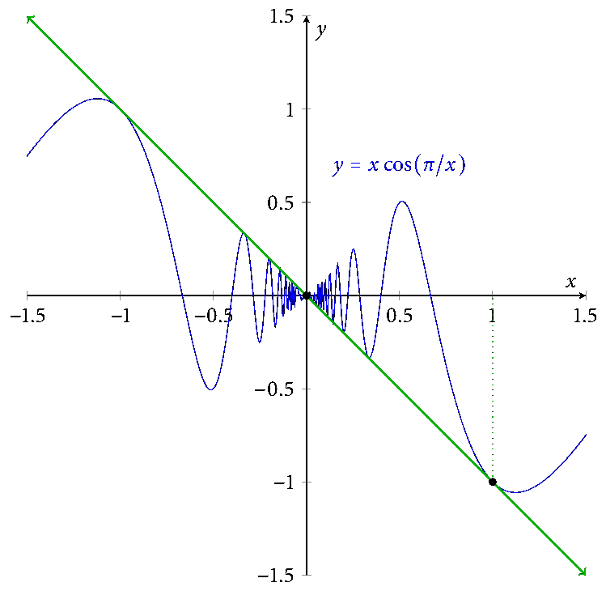

Math 3110

Syllabus
is
here.
Textbook
Understanding Analysis by Abbott, available as a PDF through the Cornell library.
Resources
Here is a link to a textbook that has been used for Math 3040 in the past.
This appendix to an old 3110 textbook might be a useful resource for those new to proofs.
The axioms for a complete ordered field.
Homework
You do not have to type your homework with LaTeX, though it's a nice skill to learn. If you choose to (neatly!) handwrite your homework, you should scan it to Gradescope using e.g. the built-in document scanner that comes with Box or Dropbox. There are other good smartphone scanning apps, or you can use a traditional scanner at the library.
Guidelines for submitting homework:
-
You should submit a PDF, not an image file, to Gradescope.
-
You must identify for Gradescope which portion of your file corresponds to which problem. Your homework will not be accepted until this is done.
-
When you start a new problem, consider starting it on a new page.
-
Genius Scan is a program some of your classmates have recommended. The document-scanner feature on Dropbox also works well.
Contact me if you want some of the homework files.
Schedule
- Mon 6 May: Review of the course. What comes next?
- Fri 3 May: Proofs of the addition formulas for sine and cosine.
Proof of the existence of \(\pi\).
- Wed 1 May: Term-by-term differentiation of power series (roughly Theorems 6.5.6–6.5.7 in the textbook.) The exponential function has a power-series expansion.
- Mon 29 Apr: Power series. Radius of convergence and absolute convergence on the interior of the interval of convergence. The Root Test. (§6.4–§6.5, roughly.)
- Fri 26 Apr: Uniform limits of integrable functions are integrable. Series of functions, the Weierstrass M-Test. (§6.4 and Theorem 7.4.4.)
- Wed 24 Apr: Uniform limits of continuous functions are continuous.
Uniform limit of derivatives must be the derivative of the limit function. (§§6.2–6.3.)
- Mon 22 Apr: Sequences and series of functions. Pointwise vs. uniform convergence. (§6.2.)
-
Fri 19 Apr: The Fundamental Theorem of Calculus. (§7.5.)
-
Wed 17 Apr: Example (\(\int_0^1 x^2\,dx = 1/3\)). Basic properties of the integral. (mostly Theorem 7.4.2.)
-
Mon 15 Apr Apr: Review for prelim by proving some basic properties of Lipschitz functions.
-
Fri 12 Apr: More on integrability, basic properties of the integral. (§§7.3–7.4.)
-
Wed 10 Apr: Integrability. Integrability criterion. Continuous functions are integrable. (§7.2)
-
Mon 8 Apr: Introduction to integration. Partitions. (§§7.1–7.2)
-
Fri 29 Mar: Finish derivatives. Taylor's Theorem.
-
Wed 27 Mar: Fermat's Theorem (derivative zero at local min/max). Mean Value Theorem. Derivatives are "Darboux," if time allows. (§§5.2–5.3)
-
Mon 25 Mar: Constructor theorems for differentiable functions and their proofs: Product Rule, Quotient Rule, Chain Rule. (§5.2)
-
Fri 22 Mar: Continuous functions preserve functional limits. Derivatives: definitions, examples, differentiability implies continuity. (§5.2)
-
Wed 20 Mar: Continuity on a compact set implies uniform continuity. Functional limits: definition, examples, constructor theorem. (§§4.4 and 4.2)
-
Mon 18 Mar: Uniform continuity: definition and examples. Started uniform continuity on compact sets. (§4.4)
-
Fri 15 Mar: Proof of the Boundedness Theorem for functions on a closed interval. (Different from the book's proof.) Sequential characterization of continuity. Second proof of Boundedness Theorem for compact sets using sequential continuity. (§§4.3–4.4.)
-
Wed 13 Mar: Proof of the Intermediate Value Theorem. (Note: we gave a different proof than the book gives.) Started proof of the Boundedness Theorem.
-
Mon 11 Mar: Comments about and examples/non-examples related to the definition of continuity. Constant and linear functions are continuous. Sums and products and quotients of continuous functions are continuous; we proved only the fact for sums. (§4.3)
-
Fri 8 Mar: Introduction to continuous functions with three examples. (§4.1.)
-
Wed 6 Mar: Proof of Heine–Borel Theorem, partial proof that \(\sqrt{2}\) exists. (§3.3, but we didn't follow the book's treatment)
-
Mon 4 Mar: Finished characterization of compactness. (§3.3.)
-
Fri 1 Mar: Closure and complements, compactness. (§3.2–§3.3.)
-
Wed 27 Feb: Open and closed sets, cluster points. (§3.2.)
-
Fri 22 Feb: Introduction to the basic topology of \(\mathbf{R}\): the Cantor Middle-Thirds Set, open and closed sets. (§§3.1–3.2.)
-
Wed 20 Feb: Final comments about series: Comparison Test, Alternating Harmonic Series, absolute and conditional convergence, maybe some comments about rearrangements. (§2.7)
-
Mon 18 Feb: Finished Cauchy criterion; geometric series, other comments about series. (§§2.6–2.7)
-
Fri 15 Feb: Introduction to series. Cauchy sequences if time allows. (§§2.4, 2.7)
-
Wed 13 Feb: subsequences, examples, the Bolzano–Weierstrass Theorem. (§2.5)
-
Mon 11 Feb: finished the uncountability of the reals. Monotone Convergence Theorem for sequences and an example. (§1.5, §2.4)
-
Fri 8 Feb: cardinality, the countability of the rationals and the uncountability of the reals (§1.5)
-
Wed 6 Feb: loose ends: uniqueness of limits, sequential density of rationals in reals, more on algebraic properties of limits (§2.2–2.3)
-
Mon 4 Feb: algebraic and order properties of limits, boundedness of convergent sequences [substitute] (§2.3)
-
Fri 1 Feb: sequences and convergence of sequences, examples [substitute] (§2.2)
-
Wed 30 Jan: the Archimedean Principle, the order-density of the rationals (mostly §1.4; see the Appendix linked above too)
-
Mon 28 Jan: Axiom of Completeness (§1.3)
-
Fri 25 Jan: background: sets, functions, and induction (§§1.1–1.2)
-
Wed 23 Jan: Intro, welcome, §§1.1–1.2